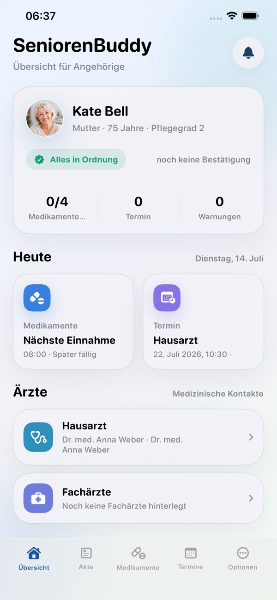
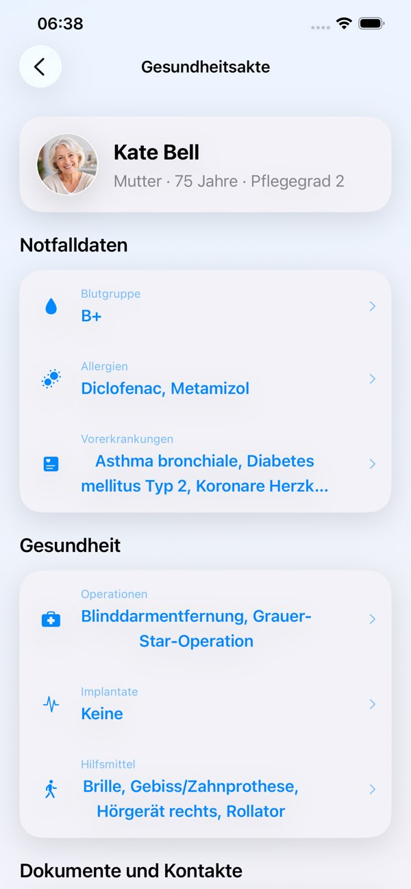

Medikamente
Medikamente sicher im Tagesablauf organisieren.
Gemeinsam sicher und selbstständig
Alles Wichtige verständlich an einem Ort.


Verständlich im Alltag
SeniorenBuddy bringt Erinnerungen, Gesundheitsinformationen und vorbereitende Listen in eine gut lesbare Struktur – selbstständig oder gemeinsam mit Angehörigen.
Übersicht im Alltag
Verständlich und für Familien gemacht.
Medikamente sicher im Tagesablauf organisieren.
Termine und Erinnerungen an einem Ort.
Wichtige Informationen schnell wiederfinden.
Bei wichtigen Terminen nichts vergessen.
Angehörige informieren, wenn Hilfe gebraucht wird.
Zusätzliche Unterstützung direkt am Handgelenk.
Klare Hinweise unterstützen bei wiederkehrenden Aufgaben und zeigen verständlich, was bereits erledigt wurde.
Verbundene Personen können bei der Organisation unterstützen, ohne die Selbstständigkeit im Alltag aus dem Blick zu verlieren.
Die Hilfe- und SOS-Funktionen können verbundene Angehörige informieren und sichtbar machen, wenn jemand die Unterstützung übernimmt.
Mit Verantwortung entwickelt
SeniorenBuddy unterstützt beim Erinnern und Ordnen, trifft aber keine medizinischen Entscheidungen.
Die App ersetzt weder ärztliche Beratung noch Diagnose oder Behandlung.
In akuten Notfällen ist immer die örtliche Notrufnummer zu wählen.
SeniorenBuddy ersetzt keine medizinische Beratung oder professionelle Notrufeinrichtung.